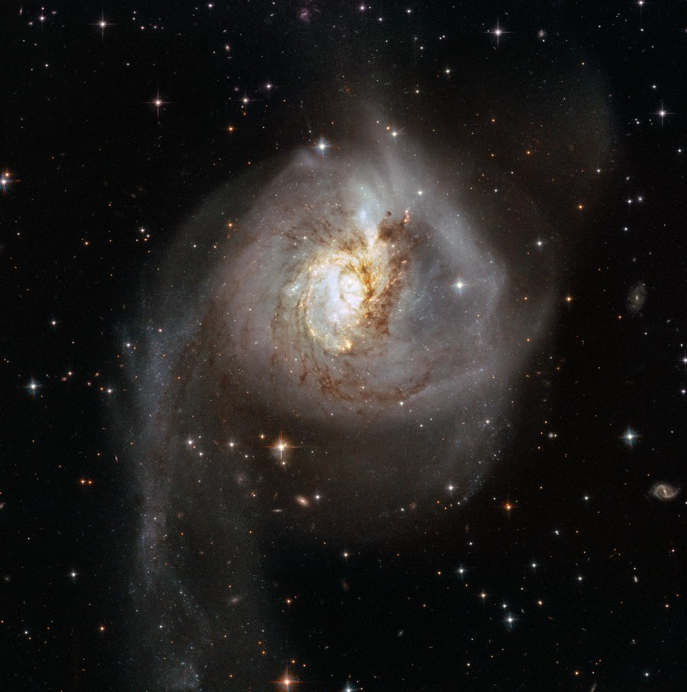

Peculiar galaxies are almost always the result of a galactic collision!
Galactic collisions aren’t as action packed as you might imagine.
Since galaxies are mostly comprised of empty space, it’s unlikely that any two given stars will collide during the event of a galactic collision.
It is believed that peculiar galaxies compose 5 to 10 percent of all known galaxies. So, it’s safe to say that galactic collisions are a common occurrence in our own universe!
